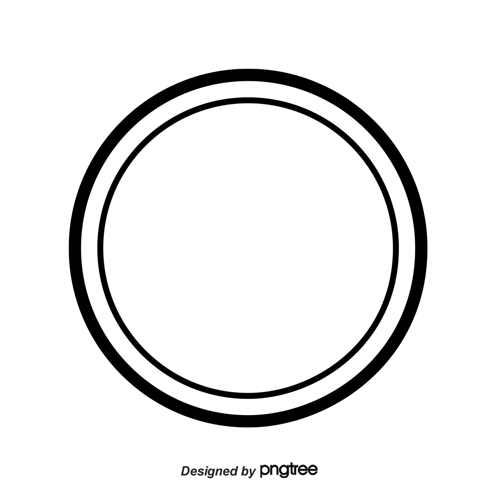
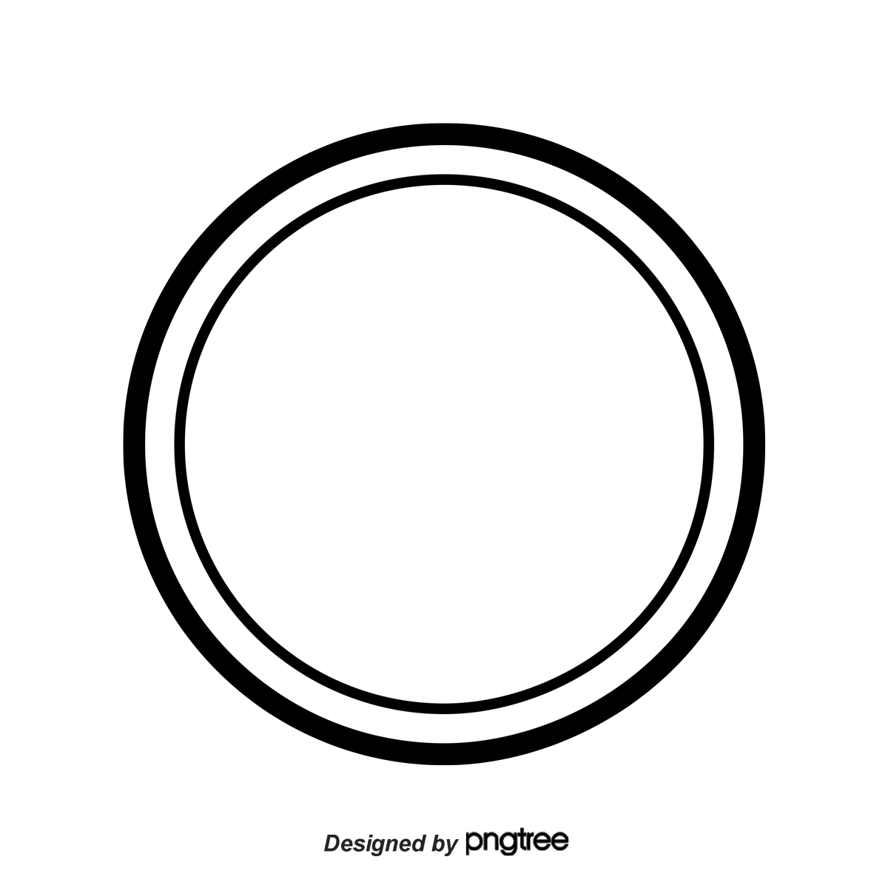

El pan de jamón es un pan relleno de jamón, tocineta sofrita, uvas, pasas y aceitunas verdes, por lo general, rellenas con pimiento o pimentón rojo.
Es un pan típico de Venezuela, que forma parte de la gastronomía navideña del país.

La hallaca o hayaca es un tamal tradicional de Venezuela. Consiste en una masa de harina de maíz sazonada con caldo de gallina o de pollo y pigmentada con onoto o achiote, rellena con guiso de carne de res, cerdo y gallina o pollo.
Ver preparación
El ponche crema es una bebida alcohólica típica de Venezuela hecha a base de azúcar, alcohol etílico y leche.
Ver preparación
El pernil es uno de los platos por excelencia de las navidades venezolanas. Se hace con la extremidad trasera del cerdo, horneada durante varias horas a fuego lento.
Ver preparación
 
